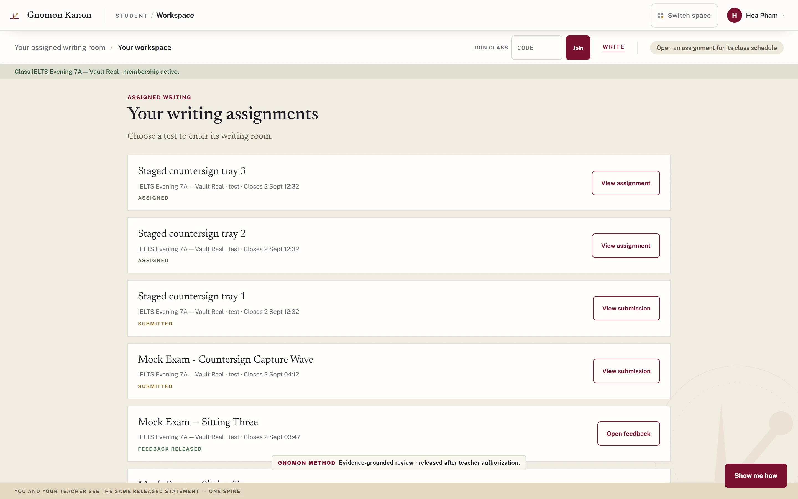

01 / PRODUCT & DATA WORKFLOWS
Gnomon
Writing assessment with a teacher in the review loop.
My contribution. Designed teacher and learner interfaces covering rubric observations, scoring and teacher review; built data-validation and model-training tooling alongside paid assessment and workflow delivery.
Data-engine record: 44 automated checks applied across 101,175 screened records. These counts describe data screening, not grading accuracy.
